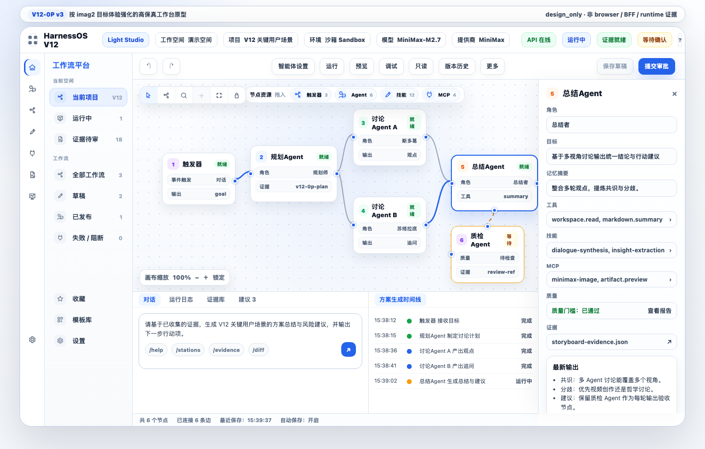
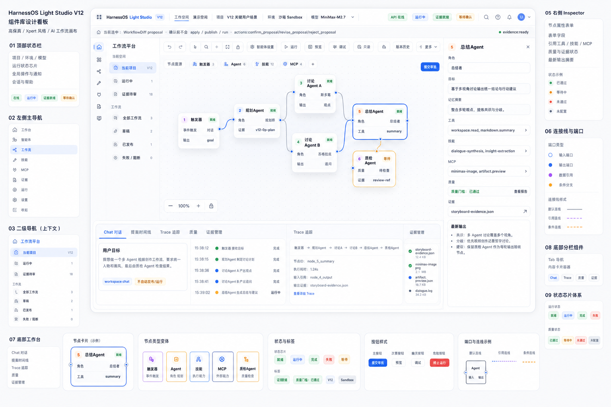
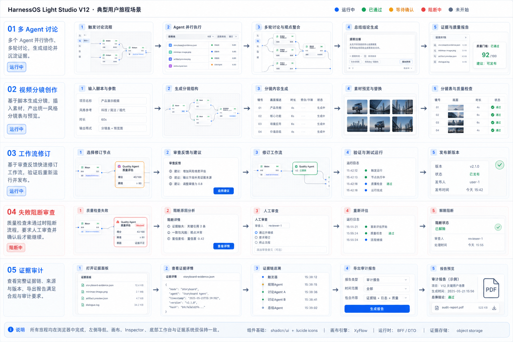
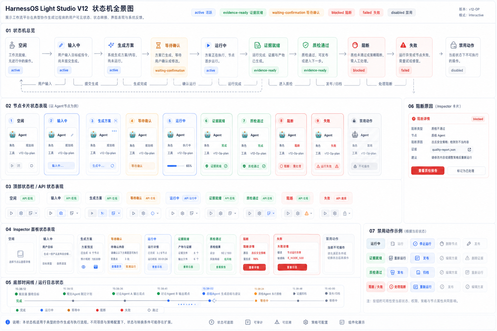
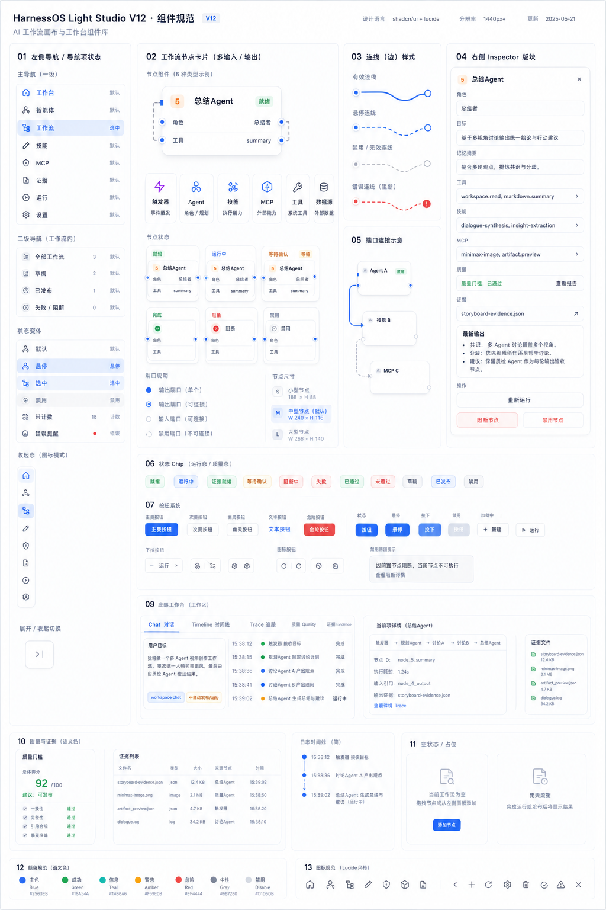
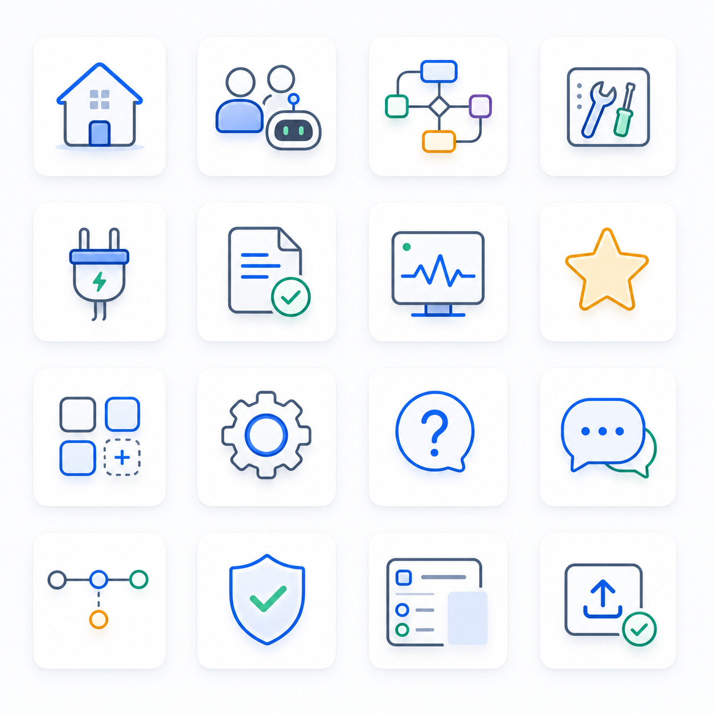

imag2 目标体验
visual target


首屏已从报告页转为工作台产品屏，顶部状态、左侧双层导航、画布、Inspector 和底部工作台同步出现。
节点卡、输入输出端口、曲线连线、选中态、阻断态和运行时间线已经接近低代码画布目标结构。
节点排布、微交互、真实拖拽、弹层、图标体系和响应式细节仍需在 V12 browser implementation 中落地。
真实实现需要 shadcn/lucide/XyFlow 组件、BFF/DTO 边界、Playwright action log、network log 和 DTO snapshot 证据。
修订后的 IA 不再把“智能体 / 技能 / MCP / 证据 / 运行”全部放在二级导航同一层。一级 rail 表示产品域；二级导航只展示当前产品域的工作流上下文；节点、模板、工具、MCP 进入画布资源抽屉或 Inspector。
以下组件来自前序组件原型与本轮高保真原型，统一放入 V12-0P 审查页。后续实现应优先使用 shadcn / lucide / XyFlow 等成熟组件，减少重复造轮子。
承载空间、项目、环境、模型、API、运行、证据、等待确认状态。
产品域导航，不承载资源类型。
显示当前产品域的列表、状态和过滤器。
收纳候选节点、模板片段、工具和 MCP。
基于节点、端口、连线、缩放和平移构成低代码画布。
展示角色、目标、输入输出、工具、证据和质量状态。
展示选中节点详情、最新输出、质量报告和证据引用。
Chat、提案时间线、Trace、质量、证据标签页。
统一图标、状态色、风险色和禁止态。
本区把组件从“看起来像”推进到“能实现、能测试、能审计”。每个组件都描述用户目标、可见数据、允许动作、禁止动作和验收重点。
目标：用户一眼知道当前工作空间、项目、环境、模型、API、运行与证据状态。
目标：用户理解“当前在哪个产品域”以及“这个域里有哪些对象”。
目标：用户能从资源抽屉拖拽触发器、Agent、技能、MCP、质检、审批节点，但只产生提案。
目标：用户能看懂每个工位的角色、目标、输入输出、工具、证据和质量状态。
目标：用户在一个面板里完成节点审查、配置理解、质量判断和证据追踪。
目标：用户通过 Chat 发起目标、通过时间线看方案状态、通过 Trace/质量/证据审计结果。
目标不是“更漂亮的静态图”，而是让用户能快速创建、观察、审查和修改工作流，并理解每个工位的产出与质量。
用户在底部 Chat 输入目标，系统展示提案时间线和画布草案，而不是静默等待。
用户看到触发器、规划 Agent、并行 Agent、总结 Agent、质检 Agent 的关系与状态。
用户点击节点后看到角色、目标、工具、MCP、质量门槛、证据和最新输出。
用户能区分设计参考、fixture、浏览器截图、运行证据和 redacted evidence ref。
所有会改变工作流或运行结果的动作都先进入 WorkflowDiff proposal，等待用户确认。

以下场景用于后续 V12 浏览器实现和 UX 自动化验收。当前页面只证明设计规格，不证明真实运行。




本轮自审聚焦组件完整性、场景清晰度、设计一致性、证据边界和可实现性。所有视觉图均为 design reference。
颜色、圆角、状态 chip、节点卡、Inspector 和底部工作台已统一到 Light Studio 方向。
典型场景说明了用户如何创建、观察、审查、修改工作流，以及如何判断证据可信度。
后续可用 shadcn / lucide / XyFlow / BFF DTO 落地；组件边界没有要求自研底层画布引擎。
页面明确 design-only，不证明浏览器实现、BFF/DTO、runtime execution 或完整工作流工作台完成。
设计方向：采用蓝 / 绿 / 琥珀状态色、圆角线性图标、轻阴影和克制的 active accent，避免原型继续使用字母占位。
实现策略：imag2 图片仅作为视觉参考；当前 HTML 原型使用内联 SVG symbols 替换 rail、二级导航和画布工具栏图标，后续浏览器实现可迁移到 lucide/shadcn。
证据边界：该图标参考不证明 browser implementation、BFF/DTO、runtime execution、Xpert parity 或完整工作流工作台完成。